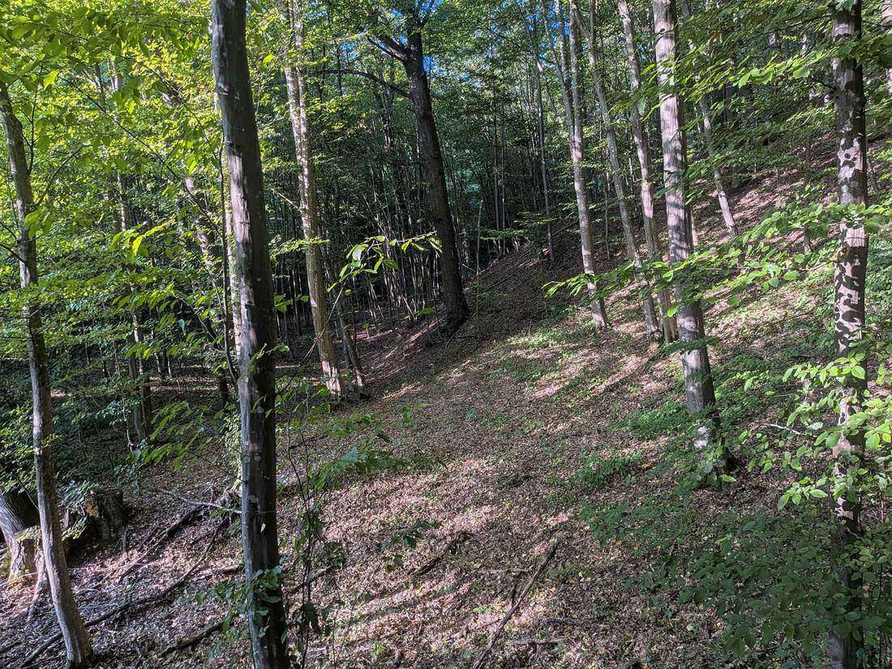
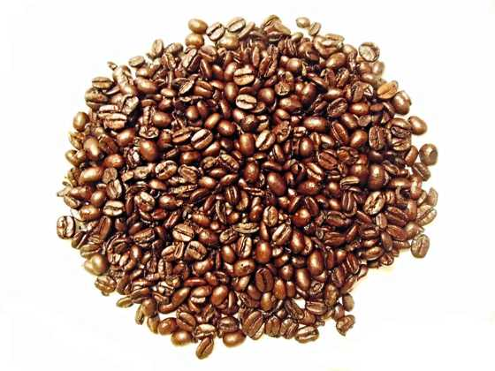
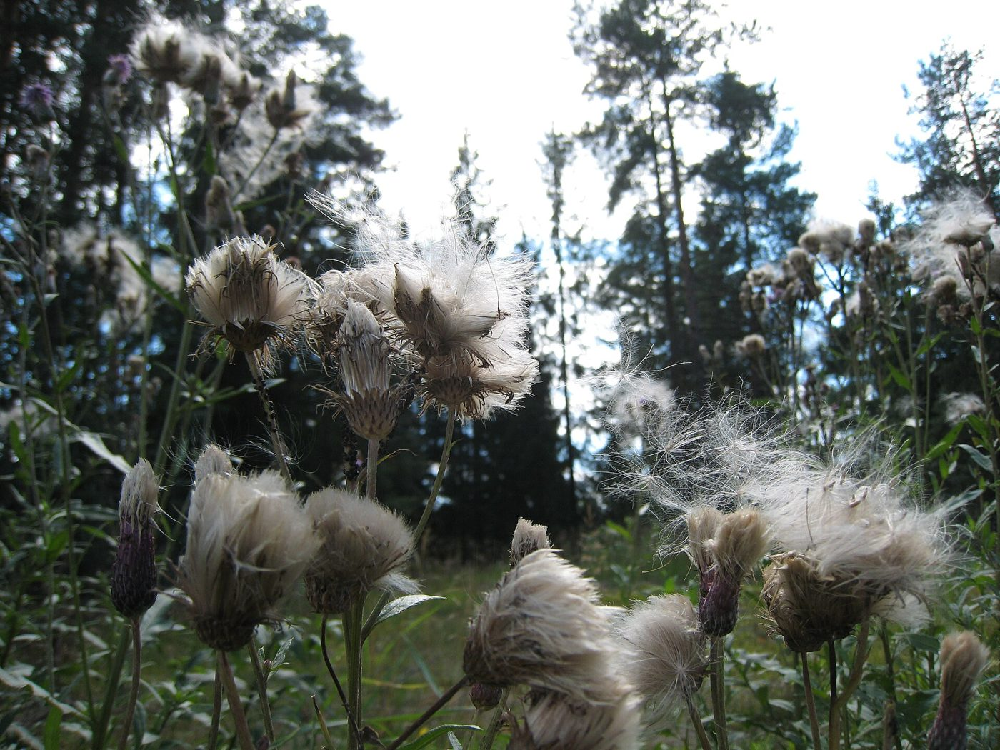
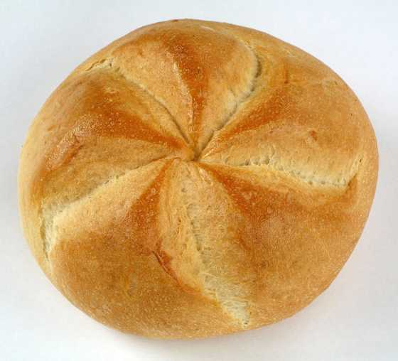
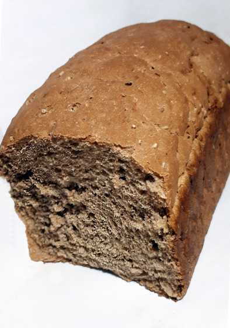

カフェ / 滋賀県大津市北比良
oberton
木々に囲まれた別荘地の奥で、カレーとコーヒーと甘いものを、ゆっくり。

メニュー
確認できている提供内容です。価格・営業時間などの詳細は準備中です。
スパイスカレー
数種類から選べ、2種類のあいがけもできるようです。副菜付き。
数種類から選べ、2種類のあいがけもできるようです。副菜付き。
ハンドドリップコーヒー・紅茶
コーヒーは豆を選べるようです。
コーヒーは豆を選べるようです。
デザート
季節や気分で内容が変わるようです。
季節や気分で内容が変わるようです。



価格: 準備中 / 営業時間: 準備中 / 定休日: 準備中 / 電話: 準備中
口コミ(イメージ例)
以下は制作側が作成したイメージで、実在のお客様の声ではありません。
イメージ例
木々の間の細い道を進んだ先に、静かなお店がありました。カレーの香りに迎えられてほっとしました。
木々の間の細い道を進んだ先に、静かなお店がありました。カレーの香りに迎えられてほっとしました。
イメージ例
コーヒーを飲みながら、窓の外の緑をぼんやり眺める時間がよかったです。
コーヒーを飲みながら、窓の外の緑をぼんやり眺める時間がよかったです。
イメージ例
デザートが季節ごとに変わるそうで、また違う時期にも来てみたいと思いました。
デザートが季節ごとに変わるそうで、また違う時期にも来てみたいと思いました。
お店のこと
obertonは、北比良の別荘地の奥にひっそり構える小さなカフェです。夫婦で営まれ、カウンターとテーブル席のこぢんまりした店内には、ランプやテーブル、メニュー表にまで店主のこだわりが感じられるといいます。カフェの裏手には1席のヘアサロンが併設されています。
店名の由来は確認できていません。このページは「森の木々の間で、手をかけた一杯と一皿をゆっくり味わう」というお店の空気を、制作側がイメージして作ったものです。







アクセス
| 住所 | 〒520-0503 滋賀県大津市北比良１０３９−７０ |
|---|---|
| 電話 | 準備中 |
| 営業時間 | 準備中 |
| @oberton_cafe |
駐車場があるようです。休業日などはInstagramでご確認ください。
写真クレジット
- Forest path in Galovići, Serbia / Beanbeans424 / CC0 1.0(images/forest-path.jpg・撮影地: 不明)
- August 2007, Forest near Helsinki airport 13 / Syced / CC0 1.0(images/forest-grove.jpg・撮影地: 不明)
- Coffee Beans / megforce1 / CC0 1.0(images/beans-white.jpg・撮影地: 不明)
- A lot of coffee beans / www.Pixel.la Free Stock Photos / CC0 1.0(images/beans-pile.jpg・撮影地: 不明)
- Beans (42182293175) / Skitterphoto / CC0 1.0(images/beans-close.jpg・撮影地: 不明)
- Coffee Beans / fireskystudios.com / CC0 1.0(images/beans-dark.jpg・撮影地: 不明)
- Croissant, whole / SKopp / CC BY-SA 3.0(images/croissant-whole.jpg・撮影地: 不明)
- Croissant, cross section / SKopp / CC BY-SA 3.0(images/croissant-section.jpg・撮影地: 不明)
- Kaisersemmel- / Kobako / CC BY-SA 2.5(images/kaiser.jpg・撮影地: 不明)
- Pan de centeno (de molde) / Flipwared / CC BY-SA 4.0(images/rye-loaf.jpg・撮影地: アルゼンチン)
- Sourdoughbreadcrumb / Nleamy / CC BY 2.5(images/crumb-black.jpg・撮影地: 不明)
- Bread roll with crumb hole, frontal view / SKopp / CC BY-SA 3.0(images/roll-crumb.jpg・撮影地: 不明)
ライセンス詳細: creativecommons.org